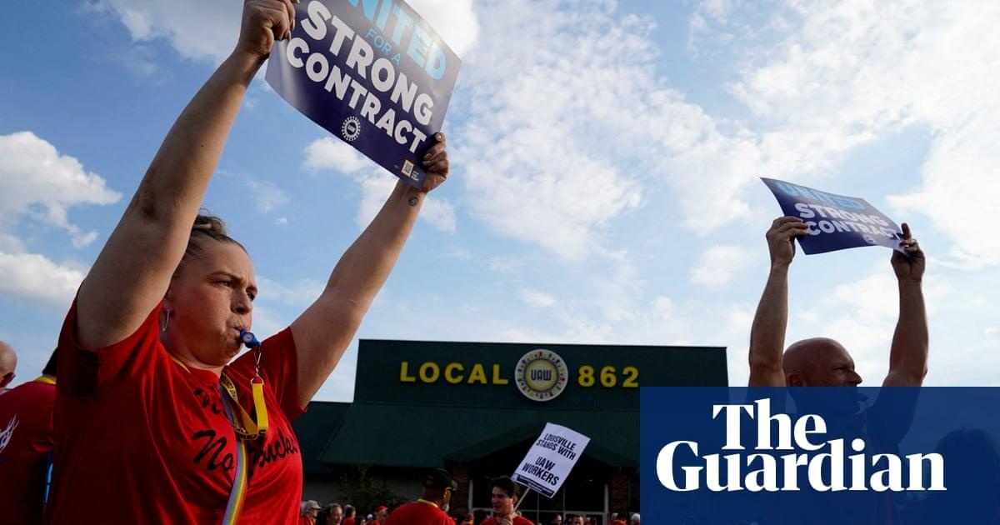

US auto workers strike escalates as UAW president calls on 38 more plants to joinThe historic US autoworkers’ strike escalated on Friday as the United Auto Workers president, Shawn Fain, called on 38 additional plants across 20 states to join the strike. During a live stream update on Friday morning, Fain announced the additional strikes at automaker plants as contract negotiations with the big three automakers remain far apart on economic issues. The strike is the first to hit all three of the US’s largest vehicle manufacturers at the same time and is becoming increasingly political. Fain invited Joe Biden to the picket line on Friday and, according to The Washington Post, Biden will visit the picket lines next Tuesday. “We invite and encourage everyone who supports our case to join us on the picket line, from our friends and families all the way up to the president of the United States. We invite you to join us in our fight,” said Fain. Fain noted there had been some real progress in negotiations with Ford, including eliminating a lower wage tier, additional job security, conversion for all temporary workers, reinstating cost of living adjustment that was eliminated in 2009, and the right to strike over plant closures. “The companies know how to make this right,” said Fain during the live stream. “Stellantis and GM in particular are going to need some serious pushing.” “The world is watching, and the people are on our side. We’ve seen poll after poll come out saying the American people support what we are doing,” added Fain. Politicians on both sides have seized on the dispute. Donald Trump will make a speech in Detroit next Wednesday, a day after Biden’s visit, where he will attempt to woo UAW workers. Other Republicans have thrown their support behind the strikers despite the party’s long-term antipathy towards organized labor. Senator Tim Scott, a presidential hopeful, has maintained the traditional party line and said striking workers should be fired. Progressive Democrats have already come out in support of the UAW and on Sunday, Alexandria Ocasio Cortez and Cori Bush are set to appear in Wentzville, Missouri, at a solidarity rally where General Motors autoworkers have been on strike. The UAW began striking on 15 September through a “stand up” strike strategy with walkouts at targeted plants to keep the automakers guessing. Three plants with about 13,000 workers walked out last Friday, a Stellantis plant in Toledo, Ohio, a Ford plant in Wayne, Michigan, and a General Motors plant in Wentzville, Missouri. The surprise strategy reportedly caused the automakers to prepare for strikes at the wrong plants, causing further disruptions. The automakers have responded to the strikes with temporary layoffs, with Stellantis announcing 300 layoffs at three plants, General Motors announcing 2,000 temporary layoffs in Kansas, and 600 layoffs announced at the Ford plant in Wayne, Michigan. Autoworkers have called for substantial wage increases and the return of benefits conceded during the 2008 economic recession but never reinstated once the automakers returned to profitability. The UAW has criticized the multibillion-dollar profits reported by the big three automakers in the past decade, including exorbitant executive salaries and billions funneled to Wall Street through stock buybacks and dividends. The automakers have characterized the union’s asks as “unsustainable”. |
 |